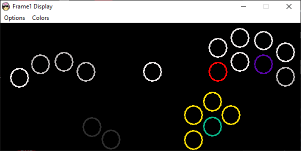
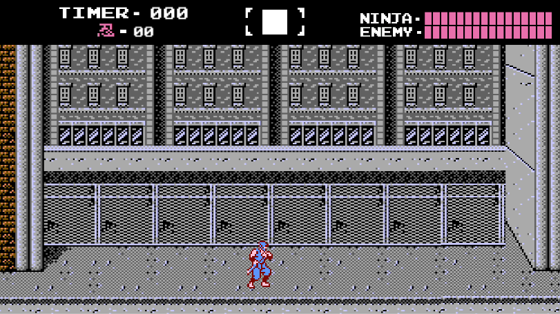
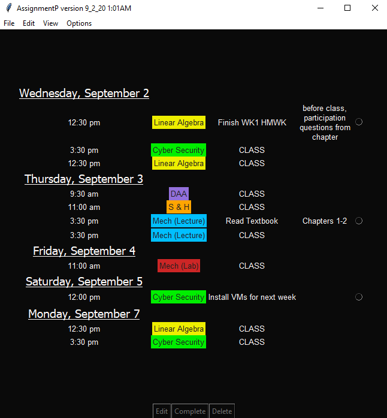

I am an undergraduate student at Rowan University majoring in Computer Science with concentrations in Artificial Intelligence and Software Engineering. An honest and ambitious creator, I'm always working on personal projects in my free time and always trying to learn more about different aspects in my field.
ASRC Federal sponsored Data Distribution Service project organized by Rowan University
January 2021 - May 2021
Created an appropriate middleware protocol and API standard accordingly to respective project requirements. As Product Owner, I constantly communicated and scheduled meetings with my project sponsor, class professor, and scrum team to ensure an optimized value of our final product.
May 2021 - June 2021
Python - UI
An input display for the Frame1 controller. Useful for content creators who use the specific controller and want to display their inputs of a control scheme general viewers may not be familiar with.
January 2021
Unity Game Engine - C# - Object-Oriented Design
A prototype created in Unity (game engine) limited to a 2 week sprint. The goal was to recreate the first level in the Nintendo Entertainment System video game Ninja Gaiden.
August 2020 - October 2020
Python - tkinter - MVC design pattern
School assignment tracker created for my own use. I still use this exclusively to keep track of school assignments to this day.